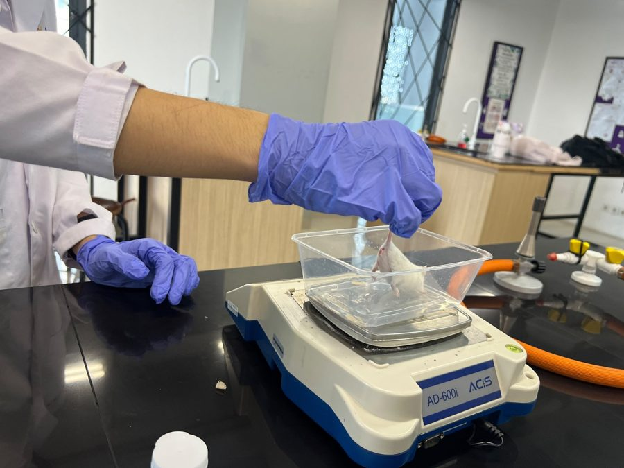

FTIC 2026

A locally available ornamental plant, tested as a low-cost herbal approach to lowering, and keeping down, blood glucose.
Between 1980 and 2014, the number of cases of diabetes mellitus increased from approximately 108 million to 422 million. Plant-derived compounds have attracted research interest due to their antioxidant and antidiabetic potential, including those in Caesalpinia pulcherrima (kembang merak). This study aimed to investigate the potential antidiabetic effect of C. pulcherrima ethanolic leaf extract by observing changes in blood glucose levels in mice.
C. pulcherrima leaves were dried, ground, and macerated to obtain an ethanolic leaf extract. Eight male mice were divided into two groups of four. Group A received the extract via their drinking water at a dosage of 200 mg/kg BW, while Group B served as the control. Treatments were given for seven days. Blood glucose levels were measured before, after, and seven days post-treatment, and the results were analysed descriptively.
In Group A, treatment lowered average blood glucose from 159.25 mg/dL to 114.75 mg/dL and sustained this reduction at 118.75 mg/dL seven days post-treatment (H+7). Group B also showed a reduction, from 170.5 mg/dL to 131 mg/dL, but rebounded to 152.75 mg/dL by H+7. By combating diabetes, this study supports the United Nations’ 3rd Sustainable Development Goal, good health and well-being. In conclusion, C. pulcherrima leaf extract decreased blood glucose and maintained the lower level after treatment ended.
Uncontrolled diabetes can lead to heart disease, kidney failure and nerve damage. Conventional drugs are often expensive, taken for life, and carry side effects such as hypoglycaemia and strain on the liver and kidneys.
Hover over or tap the charts for more detail.
A group of metabolic disorders defined by abnormally high blood glucose, fasting or after meals (Alam et al., 2014).
Deshmukh & Jain, 2021; Alam et al., 2021
People living with diabetes worldwide
The continued rise in diabetes is concerning because poorly controlled diabetes can contribute to serious long-term complications, including cardiovascular disease, renal failure, blindness, hypertension, and neuropathy (Alam et al., 2021).
Current treatments, insulin and oral hypoglycaemic agents, work by increasing insulin secretion, enhancing glucose uptake, or reducing gluconeogenesis. However, they may not fully restore long-term glucose homeostasis and can cause hypoglycaemia, gastrointestinal, liver, kidney and cardiovascular problems. Some require lifelong administration (Deshmukh & Jain, 2021; Dwivedi & Pandey, 2020).
The World Health Organization estimates that many people in developing countries still rely on traditional, mostly plant-based, medicine. Medicinal plants contain secondary metabolites such as alkaloids, phenolics, steroids, lignans, carbohydrates and glycosides, with antioxidant, anti-inflammatory, antimicrobial, anticancer and antidiabetic activity. Several plant compounds show antihyperglycaemic effects and may influence insulin secretion and sensitivity (Tran et al., 2020).
Peacock flower / Barbados Pride (C. pulcherrima L. Swartz), an ornamental shrub common across tropical regions, including Indonesia.
Sangeetha et al., 2025
IC50 antioxidant activity of the extract, linked to polyphenols
What it means: IC50 is the concentration needed to neutralise 50% of free radicals in the test. The lower the number, the stronger the antioxidant.
Its isoflavones block an enzyme behind diabetic complications
Why it matters: aldose reductase turns excess glucose into sorbitol. Build-up of sorbitol in tissues is linked to diabetic damage in the eyes, nerves and kidneys.
Inside each insulin-making β-cell, a protein called PDX-1 turns the insulin gene on. Free radicals can push that switch off. Pick a scenario to see what happens.
Group A: extract at 200 mg/kg BW in drinking water (water dispenser).
Group B (control): filtered water only.
Each group received 175 mL over 7 days. Fasting blood glucose was measured before, after, and 7 days post-treatment (H+7), and analysed descriptively.
200 mg/kg × 0.0247 kg = 4.9435 mg4.9435 mg ÷ 175 mL ≈ 0.028 mg/mL



Blood glucose in the extract group stayed low 7 days after treatment ended, while the control group climbed back up. The material is local, cheap, and easy to give in drinking water.
| Group | Before | After 7 days | H+7 | H+7 vs. before |
|---|---|---|---|---|
| A · Extract 200 mg/kg | 159.25 | 114.75 | 118.75 | −25.4% |
| B · Control | 170.50 | 131.00 | 152.75 | −10.4% |
mg/dL drop in the extract group during treatment
mg/dL change in the extract group from end of treatment to H+7
mg/dL rebound in the control group over the same period

This project supports SDG 3 (Good Health and Well-being), which aims to reduce premature deaths from non-communicable diseases by one third by 2030, through an affordable alternative approach to diabetes control. It draws on Indonesia’s local biodiversity for a sustainable health solution.